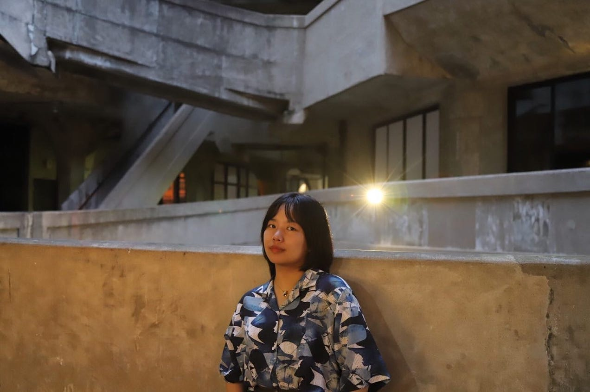
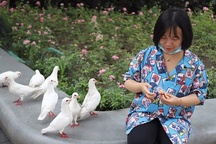

提问者曹芷馨 - WOMEN我们
她关注具体的人尤其是在不断退化的环境中生活受到严重影响的弱势群体她曾前往湖南株洲寻访那里的尘肺病人

撰文 角角
编辑 于长夜
曹芷馨是朋友中比较安静的那个。她个子娇小，有整齐的刘海，名字很诗意-–—来自唐代诗人吟颂湘水女神的诗句，“苍梧来怨慕，白芷动芳馨”。她在北京大学里面的出版社当编辑，一丝不苟地整理读者来信，为重头产品发布勘误。
2022年11月27日，在十几人的微信群“京惜守望小组”，当女孩们谈论起疫情管控和乌鲁木齐火灾，讨论要不要在北京找地方悼念死者，曹芷馨提醒要谨慎：“会不会有法律风险？”但这句话淹没在七嘴八舌的热聊中。晚上，女孩们决定行动起来，曹芷馨也出门了。
到了热闹的亮马河边，她参与摆小祭坛，跟着人群唱《送别》，喊出了自己的心声。上半夜她们就离开了河边，集体去吃了烤串夜宵。“现场有几千人，大家并不知道在自己竟会不幸成为目标，也不知道群聊已经遭到渗透。”她们的朋友说。
两 天后，11月29日，去过河边的朋友们被叫去派出所呆了24小时，曹芷馨出来后，没有拿回自己的手机和电脑。这为之后更加糟糕的境遇埋下了伏笔。2022 年12月22日，确认曾与她结伴的4个女孩再度被警方带走后，在恐惧与不甘中，曹芷馨穿着睡衣录了一段3分钟的视频。
如今，她的诘问成为运动中最有力的声音，就像诗中湘水女神的悲歌一样散遍四野，“流水传潇浦，悲风过洞庭。”
寄情自然
1996年，曹芷馨出生在湖南衡阳的县城里。她有个扎根在小城的大家族，在同气连枝的帮衬下，家族成员供职当地机关单位，很少有人远行谋生。
有 过成绩优异的童年时光，也有过叛逆厌学的青春期，曹芷馨在高中时终究没能成为合格的“小镇做题家”，因此只考上衡阳当地一所院校，专业是中国史。本科即将 毕业时，从小城“出走”的想法，给了曹芷馨强烈的动力，令她在研究生考试中发挥优异，考上了中国人民大学的中国史专业。她的同学说，那年人大中国史招20 来人，保研的人分走了一半名额，而专业课试卷特别难，几乎没人能写完。
曹芷馨的导师研究中国环境史，她也因此热爱起了大自然。 她登记成为公益组织“自然之友”的志愿者，邀请“让候鸟飞”的专家来做讲座。另外，比起空泛的自然概念和气候、能源等人类面对的宏大“挑战”，她更关注具 有地方性的具体问题。她研究江西鄱阳湖湿地的候鸟保护，并因此迷上了湿地和鸟，她听说北京北部有翠湖湿地公园，尽管每周只有少数时间开放，但她定了抢票闹 钟，在尝试几周后终于预约成功。尽管她刚毕业，上班太忙，但她正试图让自己的观鸟爱好更专业，努力攒钱，梦想有一天能有套更加专业的设备。

她 也关注具体的人，尤其是在不断退化的环境中，生活受到严重影响的弱势群体。她曾前往湖南株洲，寻访那里的尘肺病人。这些过去的农民在城镇化进程中结伴离开 家乡，“传帮带”地扎窝在粉尘密集的建筑业和矿山里，赚了钱盖了房，肺里却装满了粉尘，硬得像石头。而在硕士论文中，她则尝试复盘清末民初在湖南长沙发生 的抢米暴动，及其背后同全国范围内的米谷流通网络的关联。她想要理解的是，湖南这样富庶的鱼米之乡，以“湖广熟，天下足”而闻名于世的地方，为何最终仍然 会因为缺粮而爆发社会危机？
梦想中的工作
2021年夏天，曹芷馨毕业了。毕业前夕，她先后在广西师大出版社、中华书局、后浪出版公司和北京大学出版社等人文社科出版的知名出版社实习。最终，她转正入职北京大学出版社。
这 是曹芷馨梦想中的工作。入职北大社后，她参与重头产品《全球通史》的再版，举办活动为读者答疑解惑，请北京大学的教授们宣讲，到地方中学去推销。被消失之 前，她正在编辑人类学学者王静翻译的《本雅明之墓》，一本批判国家暴力和对历史的遗忘失语的后殖民著作。就在不久之前，她还编成了《情感何为》，一本关于 人类情感和心态史前沿研究的论文集。
她拥抱北京这座城市。毕业后，为了能更接近北京城中的市井生活，她选择租住在东二环的胡同里，那是间天花板很低的老房子，冬冷夏热、空间不足、没有独立卫生间，去西北四环的单位要往返折腾两个多小时，她用书籍把房间填满，有了一个理想的栖身之地。
她 用塔可夫斯基电影《飞向太空》为自己取名“索拉里斯”，总去看电影资料馆20块钱一张票的国产老片，其实她最爱那些关于北京的电影：从石挥关于旧北平的 《我这一辈子》，到陈强陈佩斯改革开放后的轻喜剧《二子开店》，再到姜文主演的阴郁悲剧《本命年》，和葛优、徐帆、冯小刚等人初合作时的京味电影《大撒 把》，她看了一遍又一遍。她也不断地在看小说，譬如《地下室手记》和《卡拉马佐夫兄弟》。最近对华人离散文学有兴趣，读了马来作家黎紫书的《流俗地》和张 贵兴的《野猪渡河》。
“京惜守望互助小组”
在北京电影节，曹芷馨偶遇了同样就读于人民大学的曹原。曹原是山东姑娘，毕业于社会学系，热爱社会学、人类学理论，也在出版社工作。“二曹”一拍即合，成为挚友，这些有相同背景，坚持相同理念的年轻人，很快和北京有了稳固的社交圈。
大约二十个姑娘组成了一个微信群，名叫“京惜守望互助小组”，群友主要是热爱北京生活的年轻职业女性。她们多出生于1995年前后，教育背景类似，学习文化研究、历史、教育学、电影、社会学，许多曾经在海外读过书。
她们在一起约饭长谈、在京郊徒步、办读书会、看电影、聊聊社会现状。2022年，疫情三年封控积累的焦虑抵达顶端，铁链女、唐山打人事件披露的女性处境的残酷现实，女孩们的政治性抑郁越来越严重。但她们仍然想要留在中国，这里有她们想做的事。
秦梓奕有法学、社会学的背景，自费学习和拍摄独立电影，而杨柳在新加坡读完硕士后，回国做记者，李思琪放弃了稳定的工作与收入，选择成为独立记者。
这 群怀抱理想的知识青年面对的是坚硬冰冷的现实。电影业在疫情中近乎彻底沉寂，独立电影人更是连连遭到打压；记者们能够报道写作的空间越来越小，受到的钳制 越来越多；而自由职业者们总是难以养活自己，仰甲方鼻息；曹芷馨所在的出版业也面临版号越来越少、禁区越来越多，出书越来越难的问题。
和朋友们一样，曹芷馨不是没有其它选择。她在大学中认识的男友就选择了出国攻读博士，她也希望能继续在学术上深造。曹芷馨从没有出过国，甚至很久没能离开北京，她当然也想看看世界是什么样子。她曾承诺男友，要和他去他所在地的国家公园和荒野小径上漫游。
但直到消失之前，曹芷馨都没有真正把出国读书提上日程。熟悉她的人都明白真正的原因：她不想放弃现在这份出版编辑工作，不想离开热爱的中国和北京，也不想离开朝夕相处、一起快乐生活的朋友们。
去年底，这个微信群里的朋友们大都被以“扰乱公共秩序”的罪名拘捕。李元婧、李思琪、翟登蕊和曹芷馨在2023年1月下旬被检察院批捕，罪名改为“寻衅滋事”。而曹原在1月初被拘留后，没有朋友清楚她如今的确切状态。
“我们是谁不得不用来交差的任务？这一场报复是为了什么？为什么要用我们这些普通青年的人生作为代价？”曹芷馨的问询仍然在千万个电子屏幕上回响。
Thanks for reading WOMEN我们's Substack! Subscribe for free to receive new posts and support my work.